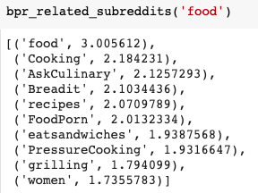
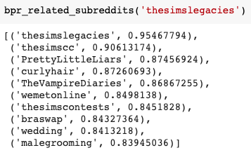
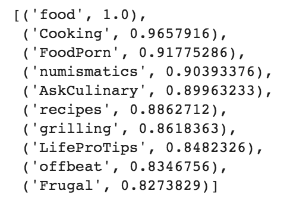
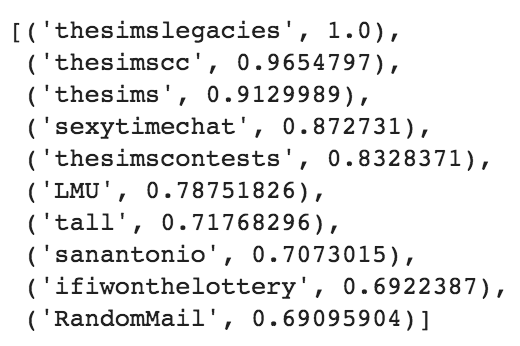
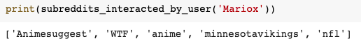
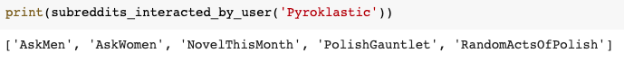
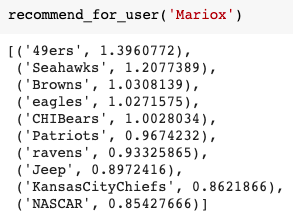
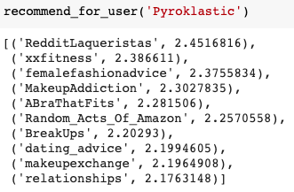
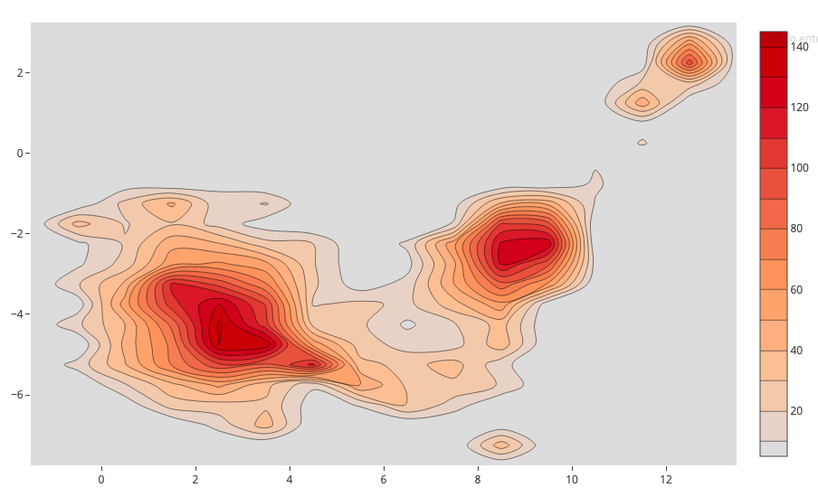

The goal of our project is to make a subreddit recommendation system for which users can see their top recommended subreddits based on their past interactions.
To measure the success of our algorithm we plan to randomly select several subreddits and find its top related subreddits. We will then evaluate how similar the content of each suggested subreddit is to the selected subreddit. We also plan to select several users at random and test our algorithm’s recommendations against that user’s interests. For example, if we see that a user’s subscriptions and interactions correspond to an interest in sports, we expect our algorithm to suggest subreddits related to sports.
We used a matrix factorization algorithm using alternative least squares. Based on the data that we gathered, a matrix factorization method seemed most logical. We gathered user interactions with subreddits by looking at the number of comments a particular user had on a particular subreddit, leaving us with a metric measuring engagement. This allows us to derive information by analyzing user behavior, giving more weight to subreddits that a user interacts with more. We had to restructure our data slightly to match the requirements of matrix factorization, but for the most part our data fit quite well to what we wanted. In addition to this, we also tried out an implementation of Bayesian Personalised Ranking in order to have a frame of reference for our recommender system using ALS. The Bayesian Personalized Ranking optimization criterion involves pairs of items(the user-specific order of two items) to come up with more personalized rankings for each user. We as a team chose these methods by discussing how we envisioned our recommendation system working with the data we had before picking models that reflected this.
Other models we considered involved some kind of NLP modeling on posts in subreddits to predict subreddits based on a user’s posts, and some kind of classifier using the short descriptions provided by each subreddit. These were scrapped as we felt a classic matrix factorization algorithm would be more effective, seeing as how it’s pretty much the standard form of recommendation systems.
Since we are working with a prediction model, it was difficult to come up with an objective way to evaluate the results. Our measure of success/failure hinges on a quantitative evaluation of similarity. To measure success, we chose users at random, created interest profiles for them, and analyzed if our system’s recommendations match up with the interest profiles. We considered testing whether or not our system recommends a user subreddits to which they are already subscribed. However, we decided against this since it would be highly unlikely for our recommendation system to recommend the exact subreddits that a user has already subscribed to due to the vast number of subreddits that existin our dataset.
Based on the random subreddits and users that we selected, it seems like our recommendation system is producing accurate results. Our hypothesis is based on the number of interactions a user has with a given subreddit as an indicator of interest. We think our methods worked well here because users who had an interest in an area, like cooking, were often interacting with a wide range of subreddits in that category, such as breadmaking subreddits or canning subreddits, allowing us to infer similarities between subreddits, and to deem them 'related'.
Two of the random subreddits we selected were r/food and r/thesimslegacies. Below are the top 10 subreddits that are related to each for the BPR method:


Looking at the top related subreddits for r/food we see that all the subreddits are food-related. We were also very satisfied to see that our similarity metrics were very high for the top recommendations to r/food. For r/thesimslegacies the results are not as clean as the ones for r/food. There is a mix of categories that were included. We are quite happy with the similarity of "thesimscc" and "thesimscontests" as they are also related to the Sims game. However, there are no clear connections with some of the other top related subreddits. Perhaps our results can be improved by expanding the number of users we include in our data set. Another explaination could be that there are just not as many sims subreddits, or people involved with one type of sims community are not likely to be involved with others unlike those in the food subreddits.
We repeated this with the ALS method and these were the results:


Looking at the results from using ALS instead of BPR, we see some differences in the output of the top related subreddits. For r/food we get a number of food-related subreddits but we also get an array of others, such as r/numismtics, a subreddit for coin collecting. For r/thesimslegacies, we get an additional subreddit (r/thesims) and we see that the sims related subreddits are rated higher in likeness to r/thesimslegacies than with BPR. Overall, we think there is an improvement to using the BPR method to the ALS method.
Two of the random users we selected were Mariox and Pyroklastic. We first pulled a list of subreddits that each of the users has commented on. It seems that Mariox is interested in anime and football while Pyroklastic seems interested in nail polish/makeup, as well as some social/question-and-answer subreddits.


For Mariox, our recommendation system suggests a lot of football team subreddits, which is along the lines of what their profile would suggest. The suggestions are almost entirely, however, dominated by football; perhaps this is due to the number of football-related subreddits in the sample. Potential improvement to the recommender would perhaps suggest subreddits related to their other interests, such as anime. For Pyroklastic, we have a lot of makeup-related subreddits, as well as several dealing with relationships. This, again, more or less is what we expected, based on their profile. All in all, our algorithm seems to work fairly well, subjectively speaking; recommendations are related in content to the sample, and could conceivably be other subreddits these users are subscribed to. These recommendations make sense, so we are fairly confident that our recommendation system is working as intended, and that the users could potentially enjoy these suggested subreddits.


We chose a spatial visualization of the subreddits we analyzed as our primary mode of visualization. We graphed subreddits based on their similarities by reducing the dimensions with UMAP - subreddits that are closer together being more similar to each other. We chose this graph because it is an interactive way to visualize our results. Users can look at subreddits that are similar and dissimilar by zooming in and out. However, the graph is quite busy as it plots all of the subreddits we analyzed. Our visualization makes most sense when viewed digitally and would probably not translate well to a poster. An alternative way to communicate the result would be to provide snapshots of certain subreddits and their surrounding related subreddits, and not display the entire graph with all the subreddits. Our visualization should be able to standalone without context. However, due the vast number of subreddits, we aren't able to plot all subreddits onto the scatter plot. A compromise we made was randomly selecting a number of subreddits to plot. However, the result of this is that not all subreddits are shown, so clusters may not show an obvious relation.
We also chose to display a “heat map” of our data. This map displays the concentration of where subreddits are clustered. This can help visualize overarching topics that may encompass several subreddits. This visualization may need additional context for viewers to interpret.
Now that we have a baseline, fairly functional recommender, our next steps will be either to build on it and improve it or to contrast it with some other machine learning models to see how it stacks up. If we were to improve it, there are some interesting variations on the Bayesian Personalized Ranking that we can implement, but we were concerned about whether this would meet the requirement for multiple machine learning/statistical tests/models. The other direction, seeing how our recommender compares to other models, would involve coming up with other reasonable-sounding machine learning models that could be used for recommendation. As matrix factorization seems to be the gold standard, this may not yield very good results, but we are considering some kind of natural language processing neural network with posts and seeing how well that compares. This would also require stricter definition of the accuracy/”goodness” of our suggestion system, which is another thing that should be improved about our project. Further, as of now, our metrics focus on qualitative methods which are important when considering recommendation systems. However, we would like to come up with quantitative ways to measure the success of our algorithm.
Also, there are many subreddits of perhaps questionable content, as well as many subreddits that have been quarantined for various reasons, such as sexism, brigading, or other issues. Many subreddits borderline advocate for violence against certain groups, and while they are currently in our model, we should consider not including these subreddits whose content has been deemed inappropriate for the site at large.